It was a pleasure to research the material for the "Polygons of Another World" articles[1]. All the machines I studied were different from one another. The diversity I witnessed in the Amiga, Atari ST, PC, SNES, Genesis, GBA, and Jaguar demonstrated the richness of a field then still in its dawn.
As I concluded the series, I regretted not being able to take a look at one mythical console of the mid-90s, the Sony PlayStation. I had the opportunity to touch upon it when I was writing the Game Engine Black Book: DOOM[2] two years ago but I wanted to go deeper. My curiosity was so great that I decided to relax my rules and use DOOM instead of Another World at a pretext to dig in.
Sony PlayStation
The history of the PlayStation started in 1988 when Nintendo
collaborated with Sony to produce a CD-ROM reader add-on
for the SNES. Under the terms of the contract, Sony could
develop independently for the platform and retained control
over the "Super Disc" format – two unusual concessions on
Nintendo’s part.
The project moved forward until CES ’91 when Sony announced the joint venture called "Play Station". The next day, during the same event, Nintendo announced it had instead partnered with Philips (with much more advantageous terms) much to Sony’s surprise. Betrayed and publicly humiliated, Sony attempted to turn
to Sega’s Board of Directors who promptly vetoed the idea. In a 2013 interview then-SEGA CEO Tom Kalinske remembered the board’s conclusion at the time.
That’s a stupid idea, Sony doesn’t know how to make hardware. They don’t know how to make software either. Why would we want to do this?
- SEGA Board
They were not wrong. Sony had little experience with gaming. It also had almost no interest in trying either since most of its involvement so far had relied on one man, Ken Kutaragi. Ever since he had witnessed his daughter play on a Nintendo Famicom, Ken had been advocating for Sony to enter the market. He had even designed Nintendo’s audio chip (the SPC700) for their SNES against the advice of Sony VPs.
Despite being considered a risky gamble by other Sony executives, Kutaragi gained the support of Sony CEO Norio Ohga. In June 1992 Ken got the green light to build a gaming system from scratch. The "Father of the PlayStation" as he would later be called had to be transfered to the financially separate Sony Music to appease the board but he could set himself to work on what would become the "PlayStation" (without space).
There was originally some uncertainty about the architecture which could focus either on 2D sprite graphics or 3D polygon graphics. The success of Sega’s Oct 1993 Virtua Fighter in Japanese arcades cleared all doubts: the PSX was going the 3D route.
The project culminated two years later with the creation of Sony Computer Entertainment and a Japanese release on December 3, 1994. It was an instant success selling 100,000 units on day one, 2 million after six months, and 102 million units over its lifetime.
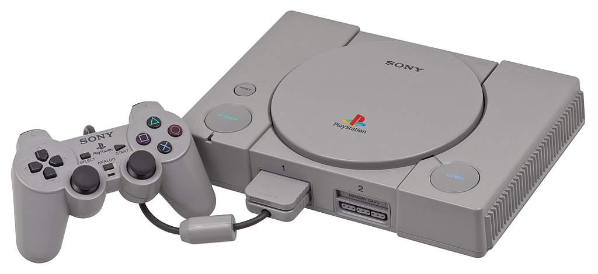The Sony PSX (aka PS1, aka PlayStation). Photo Credit: Wikipedia
Architecture
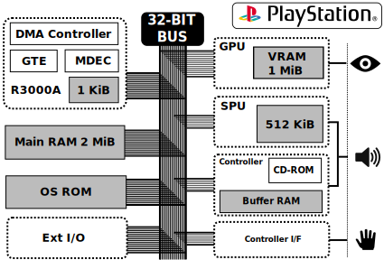
At the heart of the machine, we find a 32-bit RISC R3000A from MIPS clocked at 33.8688 MHz[3] combined to 2 MiB of DRAM. Noteworthy, this chip also feature a Motion Decoder (MDEC) to allow playback of video in 320x240 at 30fps. Next to the MDEC we find a Geometry Transform Engine (GTE) co-processor carved to perform fast fixed-point math operations on vectors and matrices. The whole system has no floating-point capability.
The GPU is a black box to be piloted by the CPU via "commands". It features 1 MiB of VRAM which is not addressable by the CPU. It works a lot like the venerable OpenGL Immediate mode by drawing textured polygons which can be "shaded" via vertex color. The pipeline is fixed and not programmable. There is no Z-Buffer.
The Sound Processing Unit (SPU) is, like the GPU, a black box. Capable of handling 24 channels, it has 512 KiB of SRAM to store audio (as ADPCM) and can mix CD-ROM audio track on its voices. The acronym SRAM does not mean "Static RAM" but "Sound RAM".
The most audacious decision from Sony designers was about the storage medium. There are no cartridges but rather a double speed CD-ROM unit which lowered game prices and improved capacity tremendously to near 650MiB. The drawbacks were a low transfer speed (300KiB/s) and an abysmal seek time (300ms).
There is no Blitter. The machine programming model was to keep developers away from the metal. There is however a DMA Controller to transfer data from CD/DRAM to VRAM/SRAM.
Video System
Even though the video system supports 24-bit colors, very few games used it (except for Heart Of Darkness backgrounds[4]). In practice, it is fair to say most games used 16-bit colors with 1-bit mask.
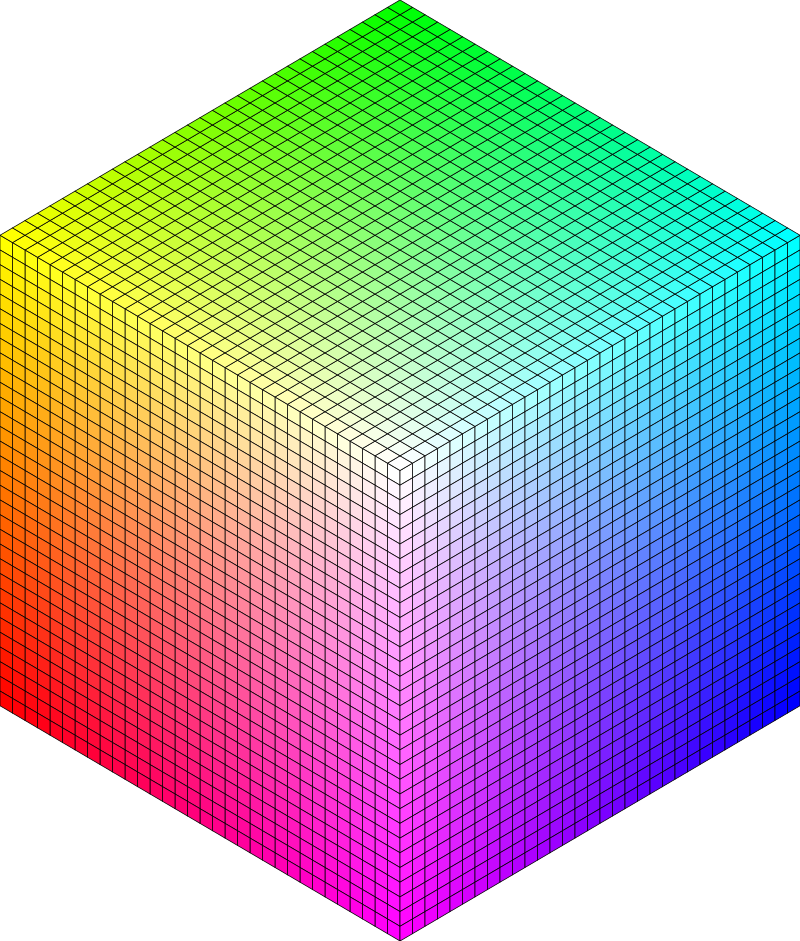
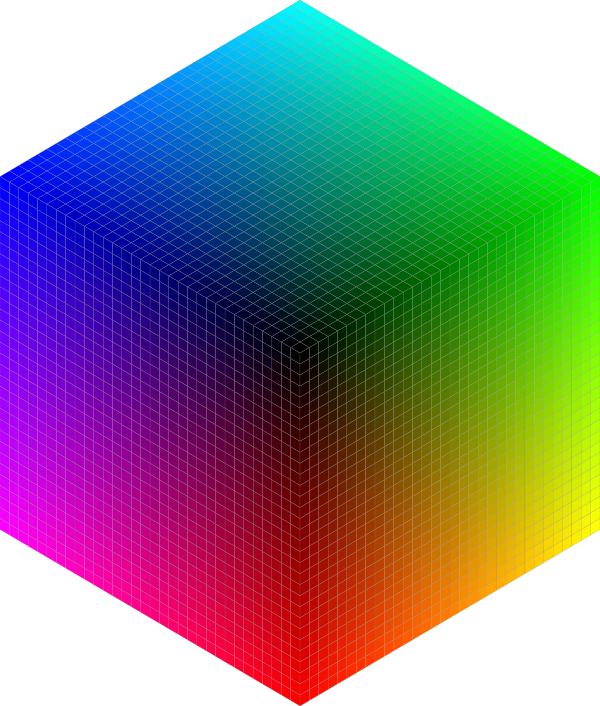
PSX 15-bit per pixel color space
What is really cool about the video system is the organization of the VRAM which is entirely up to the developer. The 1 MiB of VRAM is treated as a 1024 x 512 x 16-bit array which can be carved freely. Using double buffering or triple buffering is trivial since an area only needs to be reserved, drawn and pointed out to the output system. Textures also reside in VRAM next to the framebuffers. To write to a framebuffer, GPU commands are issued in order to draw textured triangles/quads.
Textures can have various formats. There are two direct 16-bit and 24-bit colors sources but also palette, called Color Look Up Table (CLUT), based sources. 8-bit CLUT and 4-bit CLUTs are supported.
In terms of resolutions, the console was constrained by the NTSC and PAL Television standards. For US and Japanese markets, a developer could pick an horizontal resolution of 256, 320, 384, 512, or 640. Vertical resolution was either 240 pixels (by skipping every other scanline) or 480 pixels interleaved. Both vertical modes ran at 60Hz. The only difference between NTSC and PAL is the increased vertical resolution (256/512 instead of 240/480) and the lowered refresh rate (50Hz).
Mode NTSC(60Hz) PAL (50Hz) Remark
==========================================================
0 256 x 240 256 x 256 Non-Interlaced
1 320 x 240 320 x 256 Non-Interlaced
2 512 x 240 512 x 256 Non-Interlaced
3 640 x 240 640 x 256 Non-Interlaced
4 256 x 480 256 x 512 Interlaced
5 320 x 480 320 x 512 Interlaced
6 512 x 480 512 x 512 Interlaced
7 640 x 480 640 x 512 Interlaced
8 384 x 240 384 x 256 Non-Interlaced
9 384 x 480 384 x 512 Interlaced
Notice the 384 pixels wide modes (8 and 9) which seem to have been a late addition based on their id.
DOOM on PSX
DOOM was ported to the PSX by Williams Entertainment with some assistance from id Software. It took a little bit less than a year
for a team of five[5][6] to port the engine, change the assets, and make everything work with "only" 3.5 MiB of RAM.
The graphics were reduced: the textures chopped down in size, the sprites,
monsters, and weapons reduced in size. [...] Sometimes animations had
frames cut.
- Harry Teasley
The result shipped on November 16, 1995. It is universally considered the best console port with
some aspects even outmatching the PC version thanks to colored vertex and CD quality musics.
This is the best DOOM yet!
- John Romero
Study plan
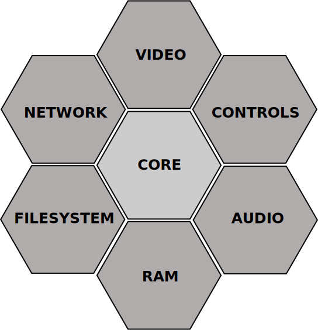
Because of the way it was developed, DOOM is designed around a core using six sub-systems for I/O. I spent most of the time studying what I expected to be the three most interesting parts, namely the CD-ROM based file-system, the SPU based audio, and the GPU based video since they are peculiar to the PSX architecture.
The original source code of of DOOM on PSX has never been released but it turned out to not be a problem at all. There is plenty of information out there.
The first source is the amazing PSY-Q SDK which was the "official" tool used by PSX developers at the time. There is a lot of documentation in the many PDFs provided. The abundance only confirmed all the good things I had heard over the years about the developer-friendliness of the PSX. The library (e.g: libcd, libds) developed by SCE[7] are also well detailed. It was refreshing to find clear explanations when compared to the next to nothing provided on other *cough* SNES *cough* consoles.
Another source of information was the many external tools available nowadays. ISOBuster allowed to open the CD content. PSound was able to scan LCD archives. The awesome no$PSX emulator's ability to trace GPU and SPU commands were pure gold.
Finally and perhaps most impressively, DOOM on PSX has received a lot of love from the fan community. It has been fully reverse engineered. PSXDOOM-RE particularly stands out since it is a C codebase which can be compiled with PSY-Q SDK into a fully playable PSX game. The code hosted is highly reliable since the methodology used to produce it involved taking machine code and rewrite each functions in C.
The marvelous world of compact discs
Before studying the file-system implementation, I make a small detour to understand the marvelous world of Compact Discs.
Several volumes of specifications covering the topic, together called the "Rainbow Books", were released over a period of 20 years from 1980 to 2000. The first in the series, the "Red Book", specs the original audio Compact Disk (CD). The "Yellow Book" is an extension of the red book, introducing CD-ROM data and ISO-9600. The "Orange Book" adds CD-DA specs, CD-R (Recordable), and CR-WR (Rewritable). The "White Book" is dedicated to Video-CD (VCD). The "Green Book" is about CD-Interactive (CD-I). The "Blue Book" is about Enhanced-CD (ECD) for multimedia support. The "Scarlet Book" covers Super Audio (SACD) introducing high-resolution audio. The "Purple Book" is about Double Density CD (DDCD) pushing capacity from 650MiB to 1.3GiB. Finally the "Cyan Book" covers the 9660 filesystem specs extensively[8].
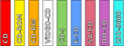
The "Rainbow Books" cover everything to be known about CDs.
The absolute minimum to understand is that PSX CDs are usually made of sectors containing 2048 bytes of payload each. Sectors are grouped in tracks (which can be data or audio). Tracks are grouped into sessions. Data track information can be organized using ISO-9660 standard filesystem although a game can also ship with hard-coded sectors addresses.
Inside DOOM CD
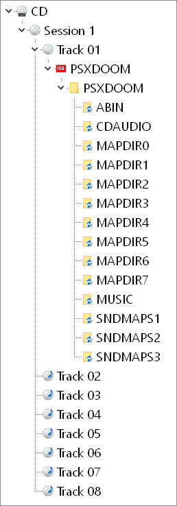
Peeking inside the CD-ROM with ISOBuster revealed that DOOM is made of one session containing eight tracks[9]. Seven of them are CD quality audio songs for intermission and end-scene. The ending track (#7) even uses digitized demon voices. Track #6 stands out particularly since it seems to have been taken straight out of a rave party. It turns out it is the music played in "Club DOOM" super-secret map #59 (a secret map only accessible from a secret map)[10]. I will let you judge the craziness by yourself.
WARNING: Double check audio volume before pressing "Play".
The remaining track (#1) is an ISO-9660 containing the game engine and most assets. Having studied many ports of DOOM, I naively expected an engine DOOM.EXE, an asset file PSXDOOM.WAD, and maybe a manifest. I was very wrong. There are 287 files in there[11][12] among them 60 .WADs, 120 .IMGs, and countless .LCDs.
The data is organized on a per-level basis (fives files per map).
Filename Description
=======================================================
MAPDIR0/MAP01.WAD Standard Geometry (BSP/Reject/...)
MAPDIR0/MAPTEX01.IMG Flat/walls textures
MAPDIR0/MAPSPR01.IMG All sprites emitted by THINGS
MUSIC/MUSLEV1.LCD Music to be played
SNDMAPS1/MAP01.LCD All sounds emitted by THINGS
A beginning of answer to this new way to do things came from Crash Bandicoot developer Andy Gavin interviewed by Ars Technica.
The CD takes about 1/3 of a second to move its head to any specific spot on the CD.
- Andy Gavin
With a seek time nearing 300ms (confirmed in PSY-Q documentation[13]), there was no way for the Williams Entertainment developers to keep the clean architecture of DOOM which stored every asset in one file (e.g: DOOM.WAD) and loaded them on demand. That would have killed the framerate.
They solved the issue by throwing some of the seemingly infinite amount of bytes of the CD at the problem. Every assets needed in a level are stored in five files covering map geometry, textures, sprites, SFX, and musics. It is wasteful but removing CD usage at run-time worked.
Trivia: In the list of files on the data track, there is a file named PSXDOOM.WAD (4,806,088 bytes) but it is only used to load the palettes and a few menu images. It was probably used more extensively during development.
In the case of the first map, the total volume of data to load is reduced from 4MiB to 900 KiB
Looking at 914 KiB of assets make it seems like there was a lot of unused DRAM. But you need to keep in mind that the 428 KiB executable also had to fit in there along with the stack, runtime variable. Runtime only had about 1 MiB of DRAM actually available.
Trivia: Digging into PSXDOOM-RE source code we find a P_LoadBlocks function which will attempt to read from the CD up to 4 times [14] before giving up. One of the joy of dealing with scratch-able medias.
I did not expect the CD-ROM seek time to have such a major impact on the design of a game. Some titles such as Crash Bandicoot built from the ground up with a paging system managed to stream the content from the CD at runtime. In the case of DOOM the engine could not do it. The CD is not used during game except for the One special songs (yes, Club DOOM).
People at id Software were never fan of the trade-off capacity/speed CD-ROMs brought to the table.
The major argument is somewhat philosophical. I don’t like what people expect out of CD games. Does anyone think that the cheeseball dialog in crash and burn is a GOOD addition? It turns my stomach. People expect CD games to have tons of digitized speech and video, and the 3DO is going to be strongly associated with it. The joke here is that if we ever do a CD version of DOOM, you are going to get the game and “The Making of DOOM” a one hour feature film. Companies spend hundreds of thousands of dollars putting all this media into their games, and it often actually detracts from it. We don’t want to be part of this crowd.
I would rather cut down to the essentials and fit on a cartridge than uselessly bulk up on a CD. I have a minimalist sense of aesthetics in game design.
- John Carmack (ATARI EXPLORER ONLINE, 22 January 1994)
Trivia: DOOM events are triggered via trip-wires. When crossed, a line with a special property will call a special function. The "legacy" version of the engine did not have a property allowing to play a song. A special linedef action (#142) was created to trigger playback of Club DOOM[15]. It is astonishing how much customization went into creating this level. They must have really really liked to rave.
The case of the missing Archvile
When I was doing research for the Game Engine Black Book, I never fully understood this quote from designer Harry Teasley.
The archvile had twice as many frames of animation as any other monster,
and we just couldn’t do him justice on the PSX. Couldn’t lose his attack, and
couldn’t lose his resurrecting power. He was just too big to include.
- Harry Teasley (Designer) for doomworld.com
Indeed peeking inside the PC archive DOOM2.WAD, we can see the arch-vile features 145 frames. In comparaison, the imp has 52 frames (thanks greatly to mirroring).
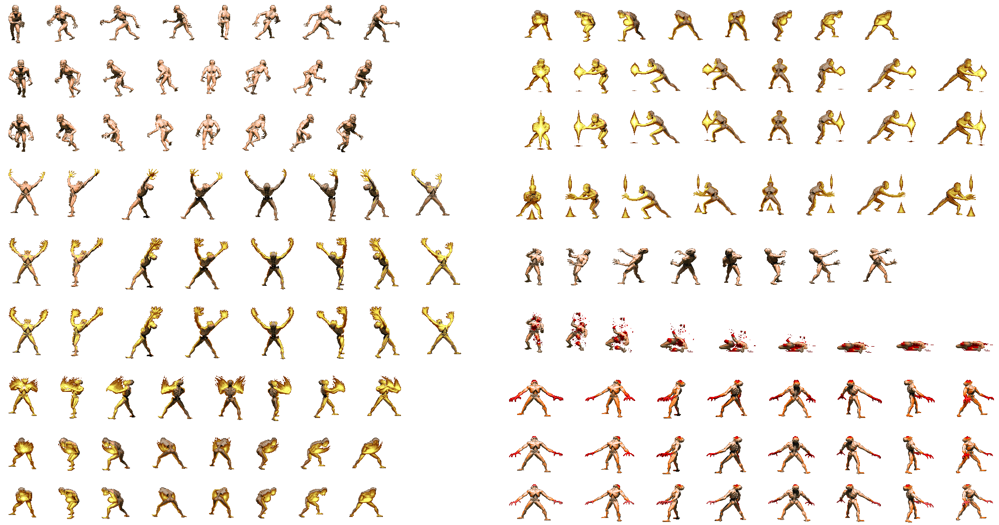
The arch-vile enemy required 145 frames on PC whick the PSX could not accomodate.
Even though it was clear the 650 MiB capacity of the CD was not the problem, it was unclear whether the DRAM or the VRAM were the limiting factor.
With the insight of CD-ROM constraints, it seems the issue was not to store the sprite on the CD or even to feed them from DRAM to VRAM. The problem was to be able to keep everything in DRAM.
EDIT: Nov 27th, 2022: After the publication of this article, Harry Teasley emailed to confirm it was a DRAM size matter.
We had limited space for monsters, only being able to fit a few in each level: several maps had one or more variety of monster removed because we couldn't make them all fit in memory.
The Archvile was as expensive as 2-3 monsters, and one of his abilities was "resurrecting other monsters", an ability that got considerably less cool if there were only like one other type of monster in the map.
The maps that included the Archvile had a large variety of monsters, and would have played *very* differently. We made what we thought would be the least painful cut.
- Harry Teasley (Designer) email
Trivia: In the source code of PSXDOOM-RE the ArchVile is completely removed. Even its #DEFINE is commented out[16].
The SPU chip understands only one format which is ADPCM. It can mix up to 24 channels (including CD audio track) and has powerful audio manipulation capabilities.
To harness this beast, DOOM PSX uses libWESS (Williams Entertainment Sound System) which was written by audio engineer Scott Patterson. The library is quite powerful since it is able to replicate a MiDI system where an "heavy" bank of notes (called sound font) is piloted by a "lighweight" music partition. It is also able to manipulate audio attributes such as volume, pitch, note velocity, and ADSR functions (Attack, Decay, Sustain, and Release) in real-time. All musics during gameplay are generated via libWESS. The one exception, you will have guessed of course, is "Club DOOM" which is played from CD track #6.
WESS relies on two proprietary file formats. There are .WMD files which contains the partition for music and SFX. There are .LCD which are PSX VAG (without an header) and containing ADPCM samples. When DOOM starts, libWESS loads all SFX (89) and music (19) partitions contained in a small, 55 KiB, file named DOOMSND.WMD. It also loads the "always-used" ADPCM samples used for the doomguy, doors, etc to SRAM.
MUSIC/DOOMSFX.LCD -> SRAM
MUSIC/DOOMSND.WMD -> DRAM
When a map is loaded, libWESS opens MUSIC/MUSLEV%.LCD which contains the ADPCM samples used by this map music and SNDMAPS%/MAP%%.LCD which contains the ADPCM samples needed for the enemies in this level. All the ADPCM samples are uploaded directely to SRAM and have no impact on DRAM consumption.
DOOM on PSX: GPU
For the video generation part, Williams Entertainment had two problems to solve. There was the small amount of VRAM (we will come back to this later). And there was the lack of perspective-correct texture mapping problem.
I worked with Aaron Seeler on the Nintendo 64 (which was a fairly different
game) and Playstation versions. Those were the first versions that weren’t
written "to the metal", since both Sony and Nintendo were forcing (at least
third party) developers to write to API instead of just handing them hardware
register documentation. The SGI culture in particular cramped developers at
the start, but Nintendo eventually walked it back a bit.
Funny story on Playstation development: Aaron and I started out with a
different engine architecture that rendered the world with triangles, since they
were fully hardware accelerated. That worked great on the N64, which had
subpixel accurate, perspective correct rendering (that SGI influence), but
Playstation had integer coordinate, affine texture mapping, and the big wall
and floor triangles looked HORRIBLE.
- John Carmack (Game Engine Black Book: DOOM)
To give get an idea of how "horrible" it looked, here are three walls rendered with affine and perspective-correct texturing.
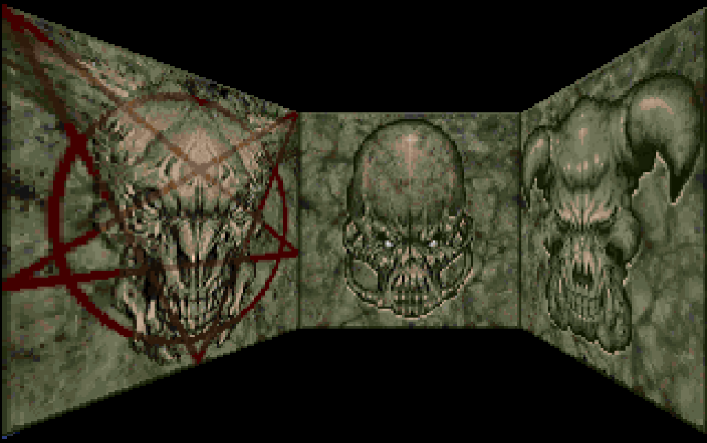
Notice how there is no problem with a front facing wall but distortion because more and more of a problem as perspective increase.
This perceptive issue is the same one encountered by Rage Software developers while porting DOOM to SEGA Saturn.
When I started the project, I had to do a demo for id Software to approve.
I started by extracting all the levels and audio and textures from the WAD
files and made my own Saturn version of this, then got an early version of
the renderer working using the 3D hardware. This got sent off and a couple
days later I got a call from John Carmack, who stipulated that under no
circumstances could I use the 3D hardware to draw the screen. I had to use
the processor like the PC. Thankfully I enjoy challenges, so it turned out to be
a really enjoyable project, using both SH2s to render the display like the PC
did it, using the 68000 to orchestrate them both.
However, it kneecapped the game and the speed-framerate suffered greatly.
- Jim Bagley (DOOM Saturn developer) for RetroGamer #134.
Perhaps because they could afford more time, the PSX developers managed to solve the perspective-correct texture mapping problem by re-purposing the GPU polygon renderer into a line renderer.
I said "back everything up (no source
control back then!), we’re going to do something completely different".
We wound up using the hardware to render triangles that were one pixel wide
columns or rows, just like the PC asm code, and it worked well. The more
common Playstation approach turned out to be tessellating geometry in two
axis, but I was always pretty happy with how Doom felt less "wiggly" than most
other Playstation games of the time.
- John Carmack (Game Engine Black Book: DOOM)
Thanks to project PSXDOOM-RE[17] we can take a look at how this was done. The rendering pipeline was completely rewritten into two phases. It is detailed in a latter section but we can indeed see where the wall rendering function R_Render_Wall issues hard-code 1 pixel wide drawing commands.
void R_Render_Wall(...){.int x1 =...;// Left end of wall.int x2 =...;// Right end of wall..while(x1 < x2){.
setRGB0(wallpoly);
setXY3(wallpoly,
x1 , ypos1 -1,
x1 +1, ypos2 +1,
x1 , ypos2 +1);
setUV3(wallpoly,
upos, v0,
upos, v1,
upos, v1);.
x1 +=1;}}
Wall are rendered with one pixel wide columns. Notice the OpenGL Immediate mode like API.
Trivia: Sony hardware designer kept the i-cache of the MIPS CPU but disabled its d-cache to turn it into a high-speed 1KiB scratchpad. The wall/plane rendering routines use this scratchpad extensively.
GPU VRAM Management
To study how VRAM is managed, I went the fun road by leveraging no$PSX emulator real-time VRAM viewer. The whole 1024 x 512 x 16-bit pixels is displayed (albeit distorded). The viewer also features a full list of all GPU commands issued by the CPU on a per-frame basis.
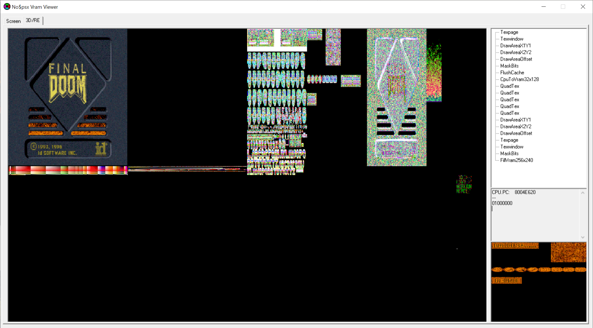
No$PSX, a god-sent emulator allowing to look under the hood of the GPU.
Taking a close look at the (properly sized) VRAM of the first frame allows to infer a lot.
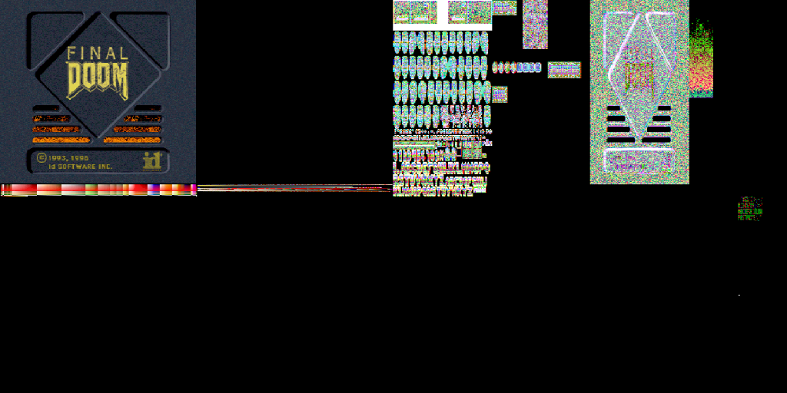
First frame of the game viewed with No$PSX.
The most obvious are the two 256 x 240 x 16-bit area in the upper left which are the framebuffers (therefore the game is double buffered). Note that 256x240 is the lowest resolution achievable by the PSX.
Below the framebuffers are a colorful set of pixels which are the CLUT palettes. Notice how there are shades of red which indicate the damage screen fade uses pre-calculated palettes.
In the upper right, we see the textures which are weirdly squeezed horizontally and with "wrong" colors. This is because the textures use 8-bit indexes into the aforementioned CLUT.
DOOM PS1 Fire Again!
Back in 2018, I set some time aside to study how the fire effect was done[18]. It was pretty cool to revisit it by looking at the GPU commands. Notice how each commands target area is outlined in red by no$PSX.
Step 1: The fire is updated in RAM and uploaded to VRAM (CpuToVram command).
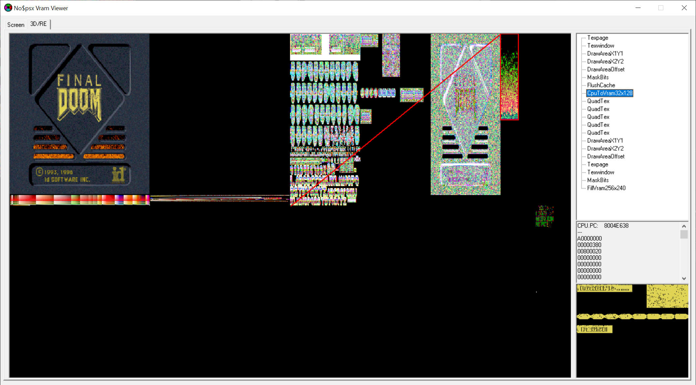
Step 2: The fire texture is drawn four times across the screen (QuadTex command). The fire texture is 32 texels wide but the GPU is leveraged to draw it 64 pixels wide. No bilinear-filtering available here, this is all nearest sampling.
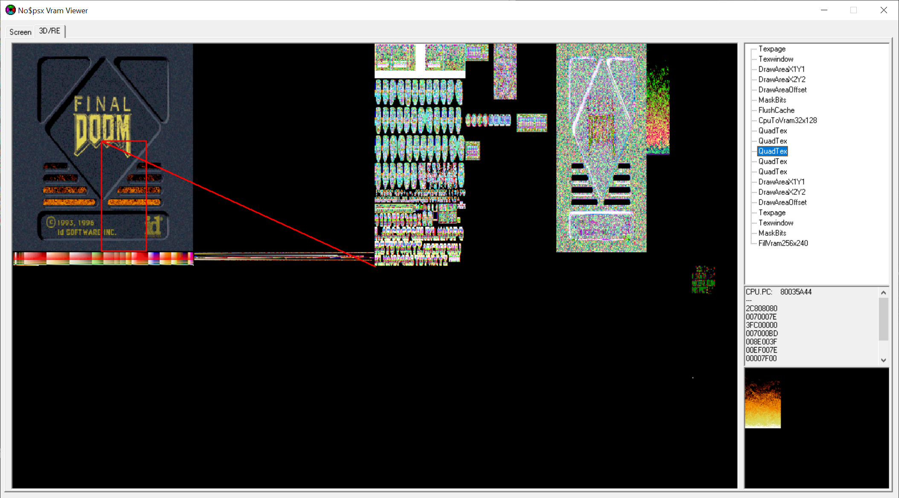
Step 3: The "Final DOOM" plate is drawn on top of everything (QuadTex command).
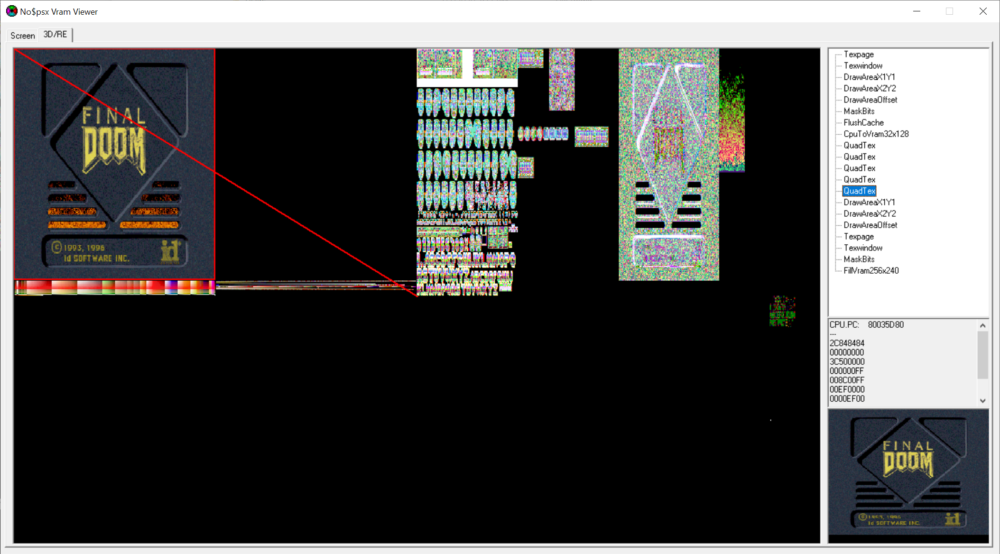
A Full Frame, command by command
Taking a look at all the commands issued in a frame showed that the engine is completely different from the PC version. In the latter, the world was traversed near to far. All walls were rendered first. The vertical gap between then (visplane) was filled on a second pass (which included the sky). A third and last pass rendered the sprites in far to near order. All this was done with zero pixel overwrite.
On PSX, rendering is done in a slightly more bruteforce style. Everything is rendered in one pass which goes far to near. The visplane system used to fill void between walls is gone. Both plane and walls are rendered on a per-subsector basis thanks to a new concept called "leaves". This "true 3D" approach is made possible by extensive usage of the GPE matrix projection capabilities. Sprites are also rendered at the same time as wall/plane without any occlusion test/clipping which result in a bit of overdraw.
Let's take a look at each step in details, starting with the sky which is rendered first with a CopyRectRaw. no$PSX shows the VRAM as the end of a frame but allows to step back in the command history. The sky pixels can still be seen only because no$PSX has trouble dealing with the one pixel wide hack (other emulators such as ePSXe don't perform much better either[19]) but all of it would have been overwritten. Notice below the sky textures, how the door key markers are atlased together.
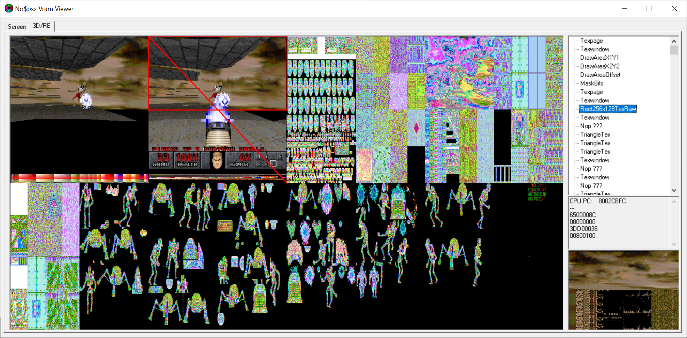
Next the BSP is traversed in far to near order. For each subsectors, all walls/planes/sprites are rendered. If you are familiar with DOOM BSP you probably remember that doombsp compiler used to only store solid segments in sub-sectors. To allow planes rendering, a new concept of "leaf" was introduced to also store BPS split segment (which are invisible). These segments are projected in screenspace to generate plane boundaries. This is much "cleaned" since it eliminate screen-space hack and bugs such as "Slime trail".
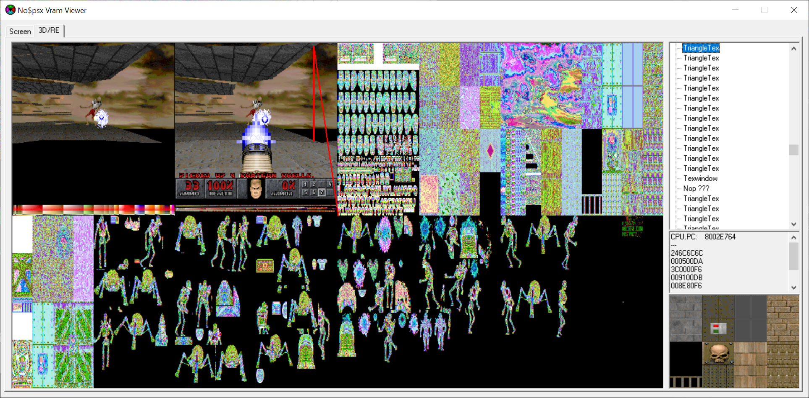
In the next VRAM capture, planes from the same subsector as the wall we just saw are rendered as 1 pixel tall triangles. Also pay attention to the wall/plane textures which all have the same dimension. This property makes texture VRAM allocation easy and prevent fragmentation.
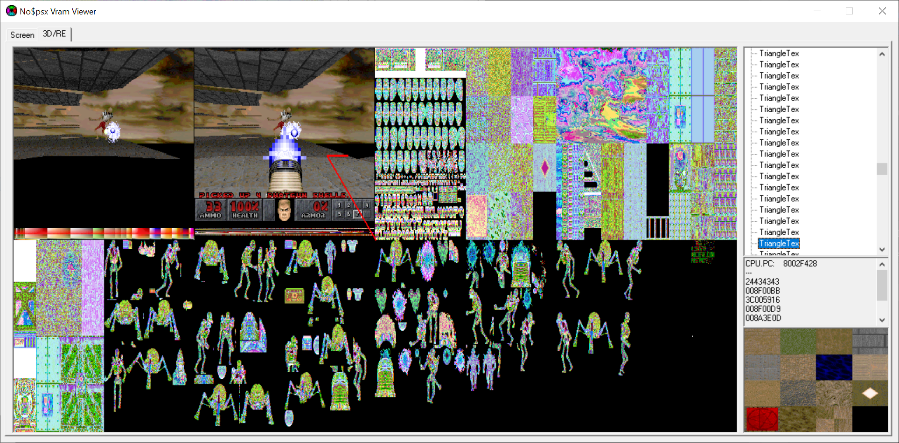
We are still in the same sub-sector. Now sprites are rendered as Quads. This include enemies, projectiles, partially transparent walls.
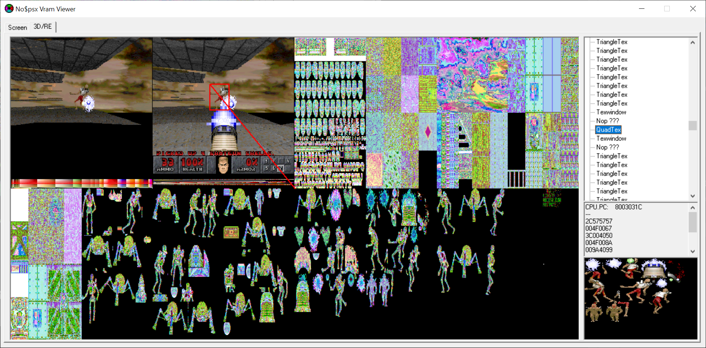
Plasma bullets just for fun.
We are now reaching the end of the draw commands. The weapon is rendered with a rectangle blend.
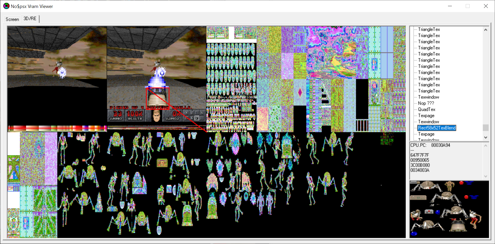
Final step. Rendering the HUD.
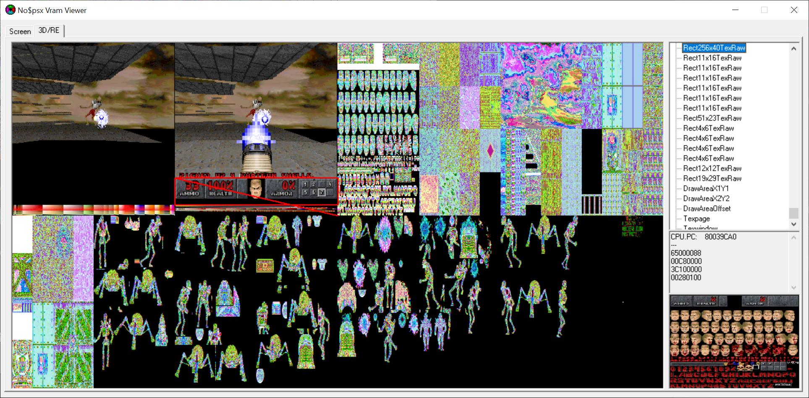
VRAM overflow!
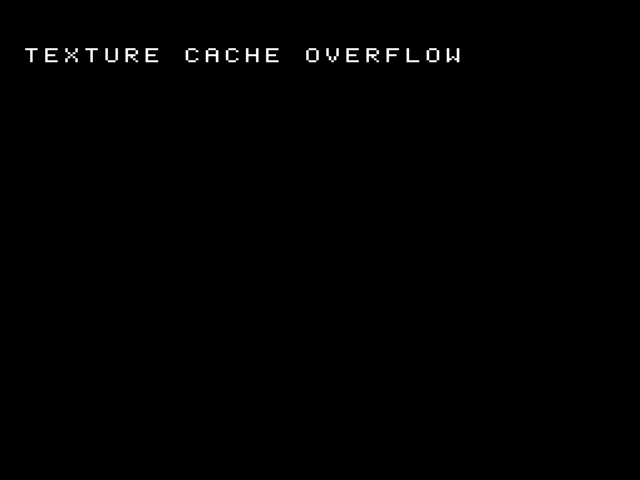
Working with the GPU was an exercise in VRAM space allocation. For this game it is a trivial task when it comes to framebuffers, CLUTs, static (HUD) contents, and even wall/flat since they are all the same dimension. Things get more complicated when it comes to sprites.
Because they have different dimension, sprites lead to fragmentation. Moreover if textures can cover large area and are repeated, sprites are often unique and many of them can be needed in unpredictable capacity. The worse case scenario is when a frame requires a certain number of sprites but they cannot fit in VRAM. This is called a "Texture Cache Overflow" and there is no recovery. When it happens, the game crashes and displays a cryptic error message[20] reminding some of us of the dreaded "No more visplanes".
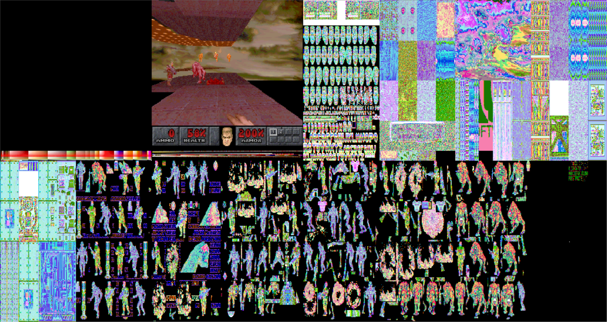
The more sprites visible at the same time, the higher the VRAM watermark.
PAL vs NTSC
Before closing the video chapter, I took a look at the conversion from NTSC to PAL. Unfortunately, like many others titles, DOOM PSX did not account for the increased vertical resolution. Playing DOOM on PS1 in Europe resulted in a vertically compressed image with significant black borders.
With the insight of how VRAM works, I have a hard time to blame the developers. If you look closely at the NTSC VRAM layout, you will notice that increasing the vertical resolution of the framebuffer completely messes up the allocation scheme. There would be no way to store textures underneath. Or the CLUT would have to be moved somewhere else. This looks like a significant effort for little payoff
and even as a player who suffered from black borders I would agree it was not worth the trouble.
Acknowledgments
Thanks to Erick Vásquez (PSXDOOM-RE author), Samuel Villarreal (PSXDOOM-RE contributor), and Dan Leslie (Professional PlayStation 1 developer) for generously providing their knowledge.
{kind=link}